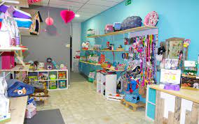
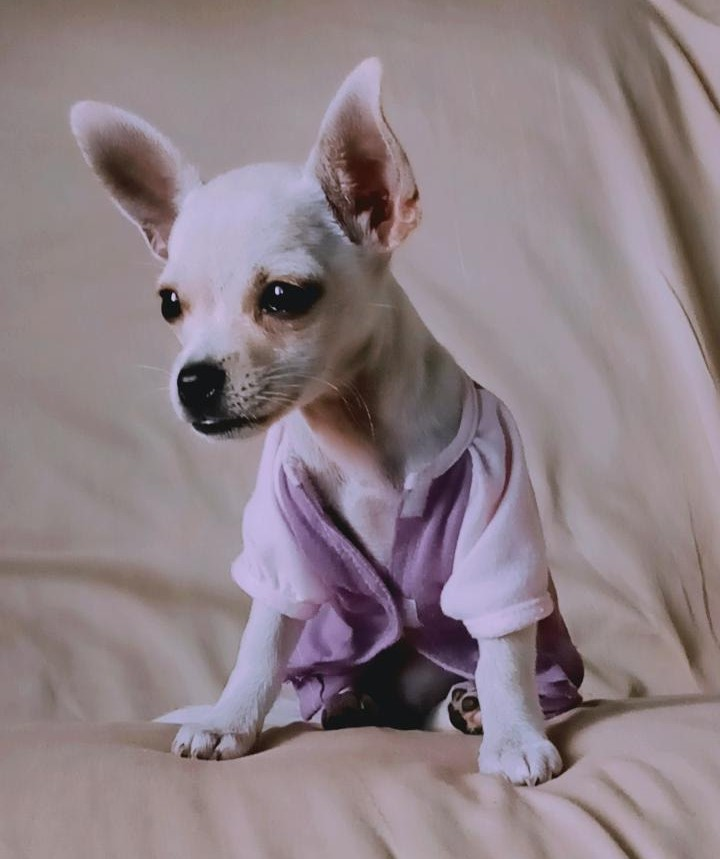
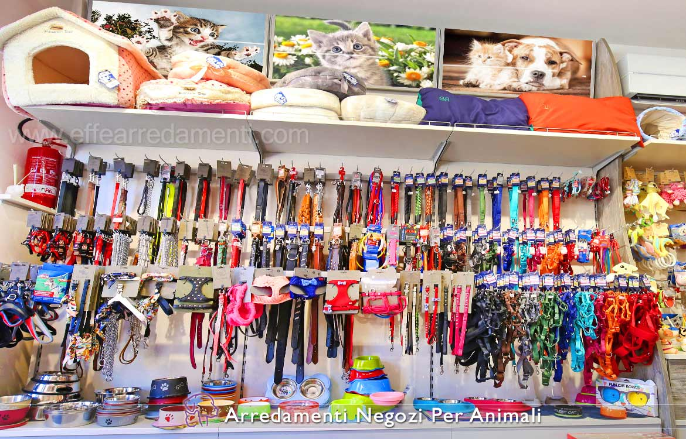

HISTORIA
Cloe Store fue fundada en el año 2019 en la Ciudad de Guatemala, en el Departamento de Petén Municipio de Poptún por la joven Judith Paola Manuel Miranda, comienza abriendo una pequeña tienda de artículos para mascotas se vendían collares hechos a mano y algunos productos básicos para mascotas. conforme el tiempo la tienda se fue posicionando en el mercado por lo cual se vio en la necesidad de aumentar el stock de artículos debido a las nuevas exigencias del mercado tales como juguetes, platos, ropa, comida, etc. Después de algunos años logramos expandirnos con más tiendas ya que un estudio de mercado demográfico demostró que en la región no se contaba con más tiendas de nuestro estilo por lo que decidimos aprovechar la oportunidad. También mejoramos nuestros servicios, contratamos más personal, cada día cantábamos más clientes nuevos, hasta que nos vimos en la necesidad de brindar un servicio a domicilio para las personas que por su trabajo o alguna otra razón no podían ir personalmente por algún artículo o ya bien por algunos de nuestros servicios de spa para mascotas.
  